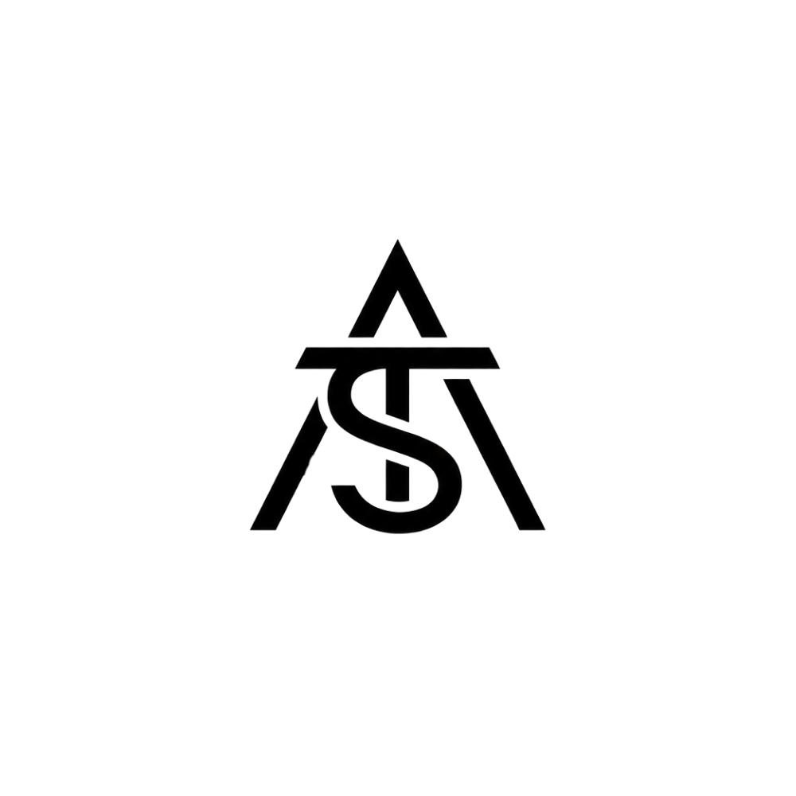

Ref. ATS-[006]
Uma freguesia mais próxima.
O desafio
Criar um website institucional para a União de Freguesias do Rochoso e Monte Margarida, com informação clara e organizada sobre a autarquia, os serviços e as localidades, facilitando o acesso à informação e o contacto com a população.
O objetivo é disponibilizar uma presença digital acessível e simples de utilizar, adaptada a telemóvel, tablet e computador, que permita divulgar notícias, avisos, documentos e contactos úteis.
O que vamos construir
- Criar um website institucional alinhado com a identidade da União de Freguesias.
- Apresentar a autarquia, os órgãos autárquicos e as localidades.
- Comunicar os serviços, os horários de atendimento e os contactos úteis.
- Disponibilizar notícias, avisos, editais e documentos para consulta.
- Facilitar o contacto dos cidadãos através de formulário, telefone e correio eletrónico.
- Preparar uma base digital com atenção à acessibilidade, segurança e desempenho.
Incluído no projeto
| Área | Entregáveis |
|---|---|
| Estratégia | Sitemap, organização da informação e estrutura base do website institucional. |
| Design | Web design profissional, direção visual cuidada e versão adaptada para telemóvel, tablet e computador. |
| Desenvolvimento | Website desenvolvido em código, otimizado para desempenho, segurança e SEO técnico. |
| Conteúdos | Estrutura para página inicial, autarquia, localidades, serviços, notícias, avisos, editais, documentos e contactos, com conteúdos fornecidos pela União de Freguesias. |
| Base de dados | Configuração da base de dados necessária ao funcionamento do website e à organização dos conteúdos definidos no projeto. |
| Lançamento | Publicação, ligação ao domínio, testes finais, configuração técnica e tutorial de utilização. |
| Serviço anual | Alojamento, gestão da base de dados, manutenção técnica, cópias de segurança, monitorização e apoio técnico, conforme o plano anual descrito abaixo. |
Valor do projeto
Construção: 50% na contratação (300 €) e 50% no lançamento do website (300 €). O serviço anual é pago no início de cada período de 12 meses, com início no lançamento do website.
Serviços adicionais não previstos nesta proposta, novas funcionalidades e integrações pagas serão orçamentados separadamente, mediante aprovação prévia.
Alojamento e manutenção anual
O serviço anual de 500 € assegura o alojamento e o acompanhamento técnico do website da União de Freguesias do Rochoso e Monte Margarida após o lançamento.
- Alojamento do website e gestão da infraestrutura necessária ao seu funcionamento.
- Alojamento, gestão e manutenção da base de dados.
- Atualizações técnicas e de segurança.
- Cópias de segurança e monitorização de disponibilidade.
- Correção de problemas técnicos e apoio à utilização do website.
- Alterações não estruturais a textos, imagens e informações existentes.
Edição de conteúdos
Este orçamento considera um website desenvolvido em código, com possibilidade de área de edição para o cliente, salvo indicação contrária ou limitações técnicas da solução escolhida.
A União de Freguesias do Rochoso e Monte Margarida poderá ter autonomia para atualizar conteúdos essenciais, como notícias, horários, contactos, fotografias, avisos e documentos ou outras informações definidas no projeto.
Com o serviço anual ativo, alterações futuras não estruturais podem ser solicitadas à ATS Studio e estão incluídas no acompanhamento anual.
Para avançar
- Aprovar esta proposta por escrito.
- Assinar o contrato.
- Efetuar o pagamento inicial de 300 €, correspondente a 50% da construção.
- Enviar materiais disponíveis, como identidade visual, textos institucionais, fotografias, documentos, horários e contactos.
- Agendar reunião de arranque para definição da estrutura, conteúdos e funcionalidades.